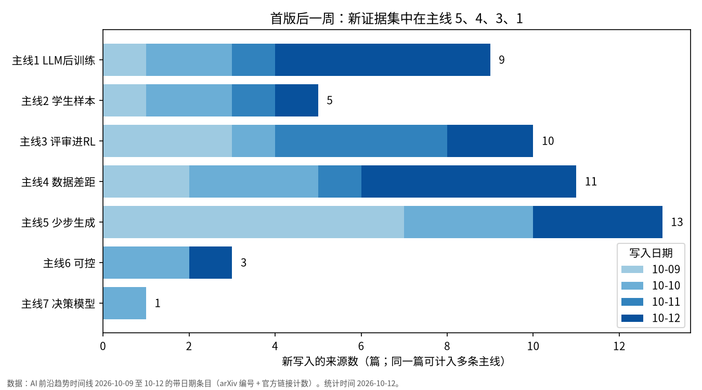
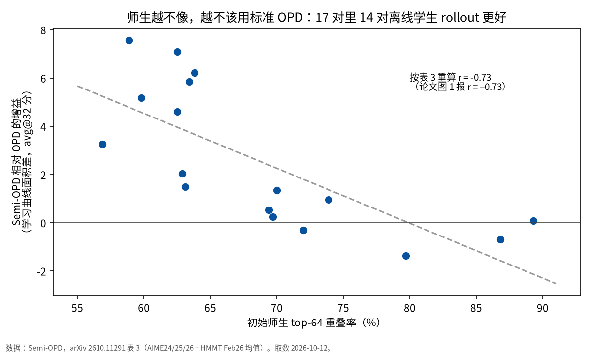

关键图



一句话结论：评审进 RL 升一档，并从图像扩到视频【推断】；视频少步降一档，研究主流仍在修 DMD【推断】；OPD 从默认配方变成要看师生重叠率的工具【证实，单篇为主】。四张信号表一周无翻转。
graph LR
subgraph BASE["10-08 首版"]
L1["主线1 LLM 后训练
先 OPD/SFT 再 RL【证实】"]
L2["主线2 在学生样本上学【推断】"]
L3["主线3 可验证环境在链路两端【推断】"]
L4["主线4 差距在数据
LLM【证实】· 生图【叙事】"]
L5["主线5 少步：轨迹蒸馏+对抗精修
是候选默认【推断】"]
end
subgraph WEEK["本周净变化"]
U3["升一档：评审进 RL
图：Arena 偏好+rubric
视频：WorldAlign 4D 奖励"]
D5["降一档：研究主流留在 DMD
绕开仅两家：π-Flow · PTD
MBDMD：DMD ≡ Drifting"]
R2["改写：样本来源 / KL 方向 /
师生重叠率 三个变量分开"]
R4["拆分：生图后训练【证实，单篇】
生图预训练仍【叙事】"]
F1["加固+限定：SFT 热身 → OPD → RL
OPD 有适用条件"]
O["新增观察：世界模型三形态
VAE 与因果生成"]
end
L3 --> U3
L5 --> D5
L2 --> R2
L4 --> R4
L1 --> F1
F1 --> R2
U3 --> O
D5 --> O

